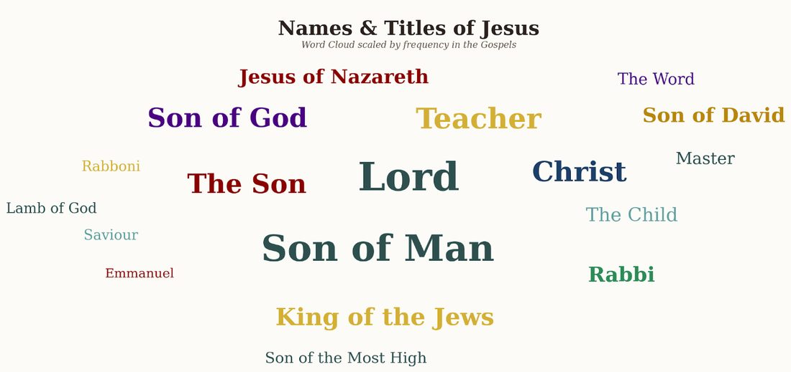
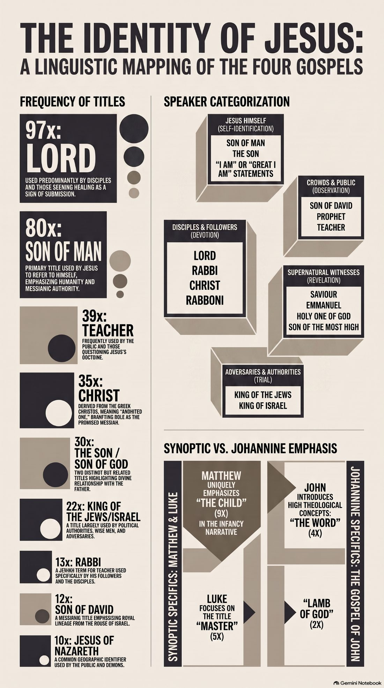

What you call someone reveals a lot. Not only about them, but about yourself and your relationship with that person. For example, imagine you are in the Oval Office with a lot of people surrounding the POTUS. You know there will be many Republicans, Democrats, members of the press, friends, and even family. But without introductions or nametags, how would you know who is who? You hear some say, “Mr. President,” “Sir,” “Mr. Trump,” “Sweetheart,” “Fascist,” “Bully,” or “Dad.” Just from those terms alone you will have a pretty good understanding of the relationship that exists between them. There might even be a term the POTUS prefers in different situations.
The same holds true with Jesus. Many terms are used with Him, and I have listed most of them below. Skipping the terms He exclusively used for Himself — the Son of Man (80 times; I wrote a pair of posts on it: here and here) and His I AM statements — let’s look at the others a little closer. (One exception: “the Son” makes the list, because what Jesus meant by it is too important to skip.)
![Mapping the names of Jesus in the Gospels by speaker: disciples and close followers used Lord (97 times), Christ (35), Rabbi (13), and My Lord and my God (once); the healed and seekers cried Son of David (12) and Rabboni (2); the crowds said Prophet or Jesus of Nazareth (10); Pharisees and religious leaders said Teacher or Master (39) and This Fellow or Deceiver; spiritual forces and divine voices declared Saviour, Emmanuel, and Beloved Son while demons named the Holy One of God; and Jesus' own self-identity was the Son of Man (80), the Son (30), and I Am](images/who-do-you-say-he-is-1.jpg)
Here is the complete linguistic breakdown for these terms, with their Strong’s Concordance numbers, original Greek spelling, phonetic pronunciations, and etymological roots. Adding these numbers to your study notes will let you quickly cross-reference how these exact terms are used in other passages of the New Testament.
1. Lord — Strong’s G2962
κύριος (kyrios) · KEE-ree-os
From kyros (supreme power, might, or authority). In Koine Greek, a kyrios is a person exercising absolute ownership rights — an owner, master, or sovereign. In the Septuagint (the ancient Greek translation of the Old Testament), Kyrios was chosen to represent the sacred Hebrew Tetragrammaton (YHWH). When disciples address Jesus as Kyrios, they are acknowledging His divine authority and ownership over their lives.
2. Christ — Strong’s G5547
χριστός (christos) · kris-TOS
From the verb chriō, “to smear or anoint with sacred oil.” The direct Greek equivalent of the Hebrew Mashiach (Messiah) — “the Anointed One.” In ancient Israel, anointing was a physical ritual reserved for individuals set apart for holy office — primarily kings and high priests. Declaring Jesus as Christos is a formal confession of His royal, messianic office.
3. Prophet — Strong’s G4396
προφήτης (prophētēs) · pro-FAY-tace
A compound of pro (“before,” “on behalf of”) and phēmi (“to declare or make clear”). Literally a “forth-teller” — someone who stands before others to speak on behalf of God, declaring His divine counsel. The crowds used this title to categorize Jesus’ supernatural power without fully committing to Him as the royal Messiah.
4. Teacher — Strong’s G1320
διδάσκαλος (didaskalos) · did-AS-kal-os
From didaskō, “to instruct, train, or pass down doctrine.” The standard Greek word for an instructor, often used in the Gospels as a translation of the Hebrew title Rabbi (John 1:38). Scribes and Pharisees used this term to establish a polite, professional boundary — treating Jesus as an intellectual rival rather than a master to be obeyed.
5. Master — three words behind one translation
Strong’s G1988 — ἐπιστάτης (epistatēs) · ep-is-TAT-ace
A compound of epi (“over”) and the root of histēmi (“to stand”) — literally “an appointee over,” a chief commander. Used exclusively by the disciples in Luke. Because Luke wrote for Greek Gentiles who would not understand Hebrew titles like Rabbi, he used epistatēs to emphasize that the disciples viewed Jesus as their direct executive commander.
Strong’s G4461 — ṑαββί (rabbi) · rab-BEE
A transliteration of the Hebrew/Aramaic for “my great one” or “my master.”
Strong’s G4462 — ṑαββουνί (rabboni) · rab-bon-EE
An intensive, highly emphatic Aramaic form of rabbi — “my highest master,” “my dear lord.” Used by blind Bartimaeus (Mark 10:51) and Mary Magdalene (John 20:16).
6. “This Fellow” — Strong’s G3778
οὕτος (houtos) · HOO-tos
A primary demonstrative pronoun. In the Greek text there is actually no noun for “fellow” — the KJV translators added the word to capture the contemptuous tone of houtos, which simply means “this one” or “this guy.” By refusing to use Jesus’ name or any title, His adversaries referred to Him with cold, dismissive distance.
7. Deceiver — Strong’s G4108
πλάνος (planos) · PLAH-nos
From planaō, “to wander off course” — the root from which we get the English word planet, originally “wandering star.” A planos is an impostor, vagabond, or seducer who actively leads others off the path of safety. When the chief priests went to Pontius Pilate and referred to Jesus as “that deceiver” (Matthew 27:63), they were accusing Him of being a dangerous political and cosmic fraud.
8. The Son — Strong’s G5207
υἱός (huios) · hwee-OS
A primary word meaning a son, by birth or adoption. While huios can refer to any male offspring, using it with the definite article as an absolute title (ὁ υἱός — “the Son”) carries unique co-equal status in John’s Gospel. In the ancient Near East, a son was the exact legal representative of his father, carrying the father’s full authority and managing his household. When Jesus called Himself “the Son,” He was declaring Himself to be the perfect, co-equal representation of the Father.
My comments
- I find it incredible that this term is used 97 times of Jesus! More than any other term. Also, that the LXX used this exact same word for God’s name in Exodus (YHWH)! There is some debate as to the extent that the LXX is also the inerrant, inspired Word of God, but it is a powerful indication of its own to the deity of Christ. My own opinion: if the LXX is not the inspired Word of God, how come it is quoted frequently throughout the NT by Jesus and others? At a minimum it acknowledges the supreme power, might, and authority of Jesus. A poor vagabond wandering the countryside.
- Like #1 above — this is a term used for kings and high priests! Reserved for someone set apart for holy office. Given to this poor vagabond wandering the countryside.
- A Prophet. This is also powerful. To be a Prophet for God was a big deal — that is evident throughout the OT. And given that God had been silent for ~400 years, it is even more startling. Someone who stands before others to speak on behalf of God, declaring His divine counsel. Ascribed to this poor vagabond wandering the countryside. From Nazareth, no less.
- I think this reveals more about the Scribes and Pharisees than it does Jesus. There is no doubt that Jesus was a teacher — in pretty much every account of His life He is teaching, in some manner, to different groups at different times. The temple officers said, “No man ever spoke like this man!” (John 7:46). But the crux of it is: the Scribes and Pharisees used this term to establish a polite, professional boundary — treating Jesus as an intellectual rival rather than a master to be obeyed. Isn’t that exactly how it is today? Those who oppose Jesus politely say, “He was a good teacher.”
- I believe the Disciples used these terms the most. Jesus, You are our direct commander, great one, highest master.
- Again, this reveals more about Jesus’ adversaries. By refusing to use His name or any title, they show their level of contempt for Him — cold, dismissive distance.
- Here we see the most derogatory term used by Jesus’ adversaries, the Scribes and the Pharisees. Not just any random bad person — Jesus is worse than a vagabond. He is an impostor, a seducer, actively leading others to destruction. Crucify Him!
- Like #1, this carries a lot more weight than meets the eye. In human terms we think of “son” as an endearing term for a child — part of a family, but separate, with a life and future of their own. Not so in this context. Using it with the definite article as an absolute title carries unique co-equal status. A son was the exact legal representative of his father, carrying the father’s full authority. When Jesus called Himself “the Son,” He was declaring Himself to be the perfect, co-equal representation of the Father.
The whole study at a glance


And now the only question that matters. After surveying every term — the reverent, the desperate, the polite, and the contemptuous — we land exactly where Jesus landed with His disciples: “But who do you say I am?” (Matthew 16:15). Peter’s answer combined the two heaviest titles on this whole page: “You are the Christ, the Son of the living God” (Matthew 16:16). Every person in the Gospels chose a term, and the term revealed the relationship. So — who do you say He is?
Comments